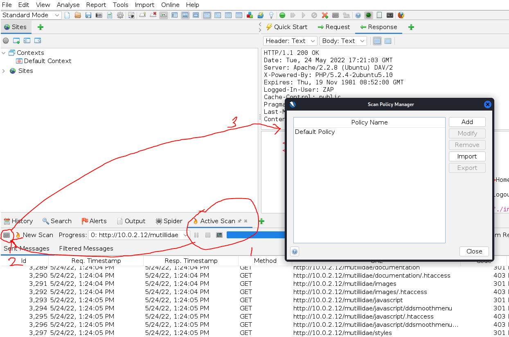
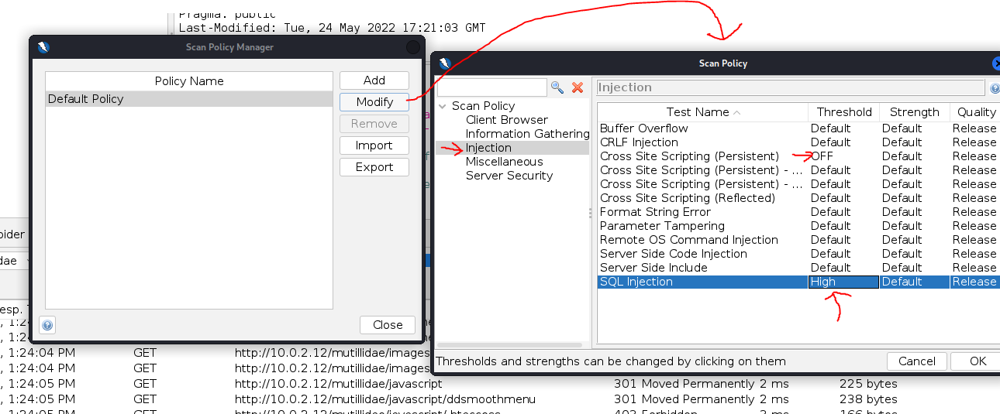
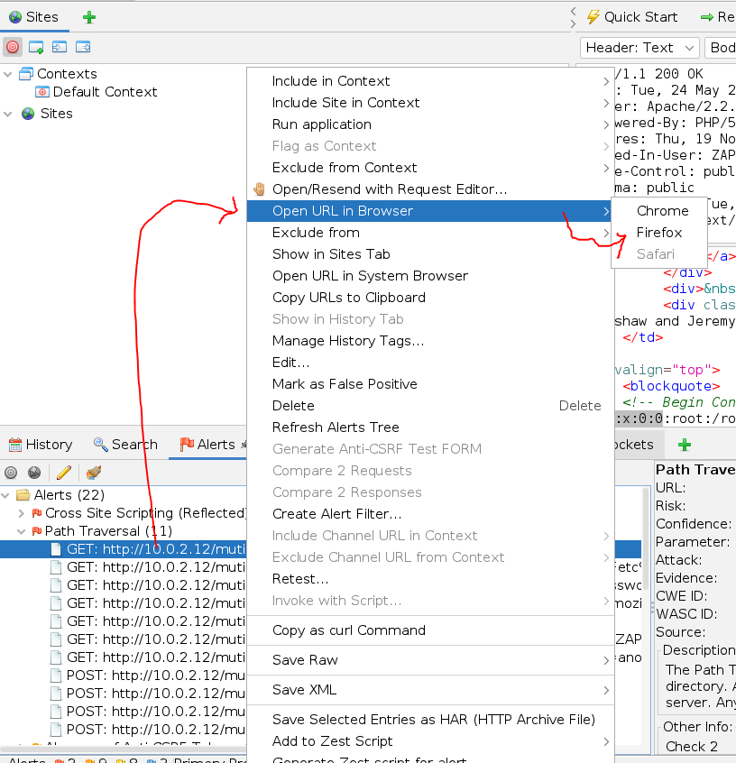
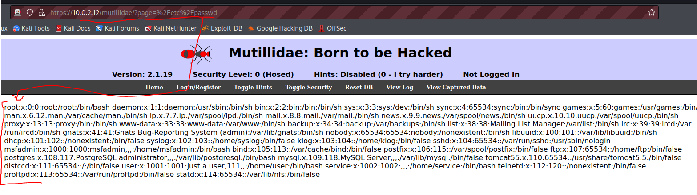

ZAP
Web siteleri üzerinde çok detaylı bir şekilde güvenlik açığı taraması yapan çok güçlü ve kullanışlı, open source bir program.
official web site https://www.zaproxy.org/

Çark işareti ile option kısmını açıp istenilen yüzlerce ayarı değiştirebiliriz.

ayrıca “Active Scan” sekmesi açıkkan solda ki icon ile “Scan Policy Manager” penceresini açıp,
Kendimiz bir policy oluştura bilir veya hazır policy ayarlarını değiştirebiliriz. Burda ki ayarlar website üzerinde ki yapacağımız tarama ayarlarıdır;

“Modify” seçenğine basınca açılan “Scan Policy” penceresinde tarama ayarlarımızı değiştirebiliriz. Örneğin tarayacağımız sitede CSS yani Cross Site Scripting olmadığını düşündük o yüzden bu pencerede (sol tarafta ki menude “Injection” seçiliyken) onu “OFF” hale getirdik, öte yandan SQL Injection için ayarı “Default” idi biz “High” yaptık... gibi gibi bu tarz ayarlarla istediğimiz taramayı daha custom bir şekilde yapabilir, daha istediğimiz sonuçları görebilecek hale getirebiliriz. Tabi siteyle ilgili bir bilgimiz yoksa hiç bir şeye dokunmadan default olarak bırakıp taramayı başlatabiliriz.
Mesela tarama sonrasında;

“Alerts” sekmesine geçip orada ki açıkları browser üzerinde çalıştırmak için (bu bir sql injection vb. bi açık olarabilir), çalıştırmaki istediğimiz kısma gelip sağ tık → open url in browser → firefox,chrome vb. seçip açabiliriz.
Örnek sonuç;
